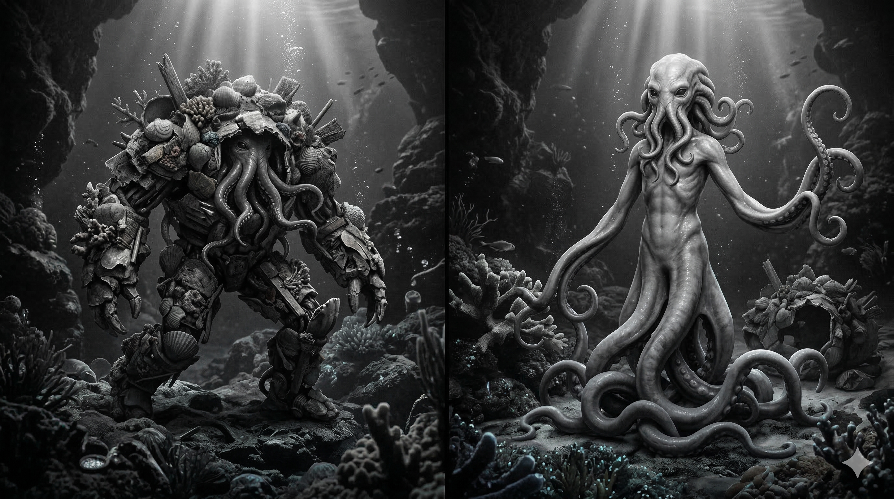

Rappel des mécaniques du Livret 1 : Avant de créer votre personnage, voici un récapitulatif des capacités disponibles. Ces éléments déterminent tout ce que votre héros peut entreprendre, aussi bien en combat que hors combat.
Les Talents couvrent toutes les actions ne relevant pas du combat direct, de la magie ni des interactions sociales — ou liées à une attaque (ex. feinte) :
Progression maximale : Sans l'aide d'objets magiques ou de capacités surnaturelles, aucun Talent ne peut dépasser la valeur de +1. Cette limite représente l'apogée des capacités naturelles et de l'entraînement mortel.
Athlétisme :
Force et endurance. Efforts prolongés ou puissants (soulever, briser, sprinter, nager). Ne couvre pas l'agilité ni l'équilibre.
Aptitude Féline :
Équilibre et discrétion. Mouvements du corps nécessitant souplesse et contrôle. Inclut le déplacement silencieux, se cacher et les désengagements.
Mécanique :
Outils et ingénierie. Confection ou interaction avec des objets ou mécanismes physiques inanimés et non organiques.
Fourberie :
Vol et feinte. Actions frauduleuses reposant sur la distraction ou la motricité fine. Ne couvre pas se cacher ni le déplacement silencieux ni crocheter. Peut s'utiliser avec une Attaque pour feinter.
Perception :
Sens et détection. Détection immédiate de stimuli. Distinction avec Survie : Perception voit (embuscade, objet caché), Survie interprète des traces (pistage) découvertes avec la Perception.
Survie :
Nature et pistage. Connaissance pratique du milieu naturel. Couvre la survie (se nourrir, s'abriter, trouver de l'eau), la connaissance de la flore et de la faune, le dépeçage et le tannage.
Savoir Académique :
Théorie et histoire. Savoirs livresques et logique abstraite.
Les Compétences couvrent toutes les actions de combat, aussi bien offensives que défensives — ainsi que l'incantation magique et la résistance aux assauts physiques et mystiques.
Progression sans plafond : Contrairement aux Talents, les Compétences de combat ne connaissent pas de limite naturelle. Au-delà du Maître (+3), les rangs suivants sont accessibles aux héros les plus exceptionnels :
Les 12 Compétences se divisent en deux catégories : 6 Attaques (3 Types × 3 Cibles) et 6 Protections (3 Défenses x 3 Résistances) :
Direct : Estoc, Jab, Tir, Lancé, Projectile magique, Rayon, flux linéaire...
Circulaire : Taille, Coup de pied circulaire, Crochet, Balayage, Disque magique, Demi-lune...
Saisie : Clé, Projection, Écrasement, Constriction, Télékinésie, Entrave, Manipulation...
Tête : Tête, Cou, Yeux, Cheveux, Esprit, Mental, Sens, Illusions...
Tronc : Plexus, Foie, Cœur, Poumons, Côtes, Altération du corps entier, Vie, Chair, Création...
Membres : Bras, Jambes, Pattes, Déplacement, Équilibre, Motricité...
Défense vs Direct
Défense vs Circulaire
Défense vs Saisie
Résistance Tête
Résistance Tronc
Résistance Membres
Résolution : Score d'Attaque (Type + Cible) vs Score de Protection (Défense correspondante + Résistance correspondante.)
Les personnages joueurs peuvent appartenir à différentes espèces, classées en deux catégories selon leur fréquence et leur intégration dans le monde connu.
Ces espèces constituent le socle des aventuriers et des peuples du monde. Elles sont courantes, bien intégrées dans la société et ne nécessitent aucune justification particulière.
Humains.
Nains.
Elfes.
Orques.
Ces espèces sont extrêmement rares, souvent considérées comme mythiques ou originaires de contrées lointaines et dangereuses. Elles sont mécaniquement plus puissantes et déséquilibrées par rapport aux races communes.
Pagures.
Ogres-Mages.
Lycanthropes.
Jouer une espèce exotique demande un véritable effort de roleplay : le joueur et le Maître du Jeu doivent collaborer pour créer un background riche, cohérent et crédible qui explique et justifie la présence de ce personnage au milieu des espèces communes. L’objectif est toujours d’enrichir l’histoire, l’immersion et la profondeur de la campagne. La motivation principale doit rester l’envie d’incarner cette étrangeté et cette rareté pour s’amuser à faire du roleplay, et non le simple désir de puissance. Le MJ peut refuser un choix d’espèce exotique si la motivation semble uniquement mécanique.
Ils conservent éternellement l'éclat de jeunes adultes au physique très attirant : silhouette harmonieuse, svelte aux courbes généreuses, d'une peau d'une douceur surprenante variant du porcelaine pâle au bronze doré et parsemée de taches de rousseur lumineuses comme des pétales. Elle porte une odeur enivrante où se mêlent le parfum naturel de la forêt chaude et celui des fleurs séchées qu'ils tressent dans leurs cheveux. Cette chevelure, très longue jusqu'aux genoux ou au sol, arbore des teintes éclatantes : des blonds polaires, des roux flamboyants ou des couleurs vives et surnaturelles (bleu azur, rose pétale, vert canopée). Elle ne traîne jamais au sol : maintenue en coiffures complexes pour ne pas gêner leur démarche, elle exige des soins quotidiens aussi méticuleux que ceux du corps. Ils l'ornent de fleurs aux couleurs changeantes qui conservent leur parfum des décennies. Leurs yeux sont d'une intensité surprenante, avec des iris d'ambre, de violet, d'émeraude ou d'or pur, jamais de simples bleus ou bruns terrestres. Leur pupille, capable d'une dilatation extrême, leur offre une vision parfaite même dans le noir le plus complet.
Les Elfes ne meurent pas de vieillesse : leur corps demeure indéfiniment jeune. Pourtant, dépasser les 350 ans reste rare, quatre siècles laissant le temps aux guerres, aux maladies, aux accidents et à la traite de faire leur œuvre.
Ils sont de surcroît peu fertiles. Leur symbiose avec la nature leur permet de maîtriser consciemment leur fécondité : une Elfe ne peut concevoir que lorsqu'elle le décide activement, un don qui évite les grossesses intempestives mais condamne leur peuple à un déclin démographique constant. Chaque naissance est un événement rare et célébré.

Dans les cités Naines Les jeunes Elfes descendent parfois vers les Forteresses-Naines poussés par leur curiosité — ils veulent contempler ces cathédrales de pierre creusées sur dix générations. Mais la réalité les accable rapidement : l'air y est épais, saturé de poussière de charbon et de vapeur de bière, agressif pour leur odorat délicat et leurs poumons habitués à l'oxygène des canopées. Le bruit constant des forges — ce martèlement incessant qui fait vibrer les os — leur donne des migraines après quelques heures. Ils admirent la conception mécanique, s'émerveillent devant la précision des engrenages, mais fuient au bout de deux ou trois jours, épuisés, les oreilles bourdonnantes, cherchant désespérément une pousse de mousse entre les pierres. Les Nains les accueillent avec une condescendance bourrue : ils trouvent ces visiteurs joliment inutiles, incapables de supporter une bière corsée, et leurs cheveux parfumés attirent les insectes des caves.
Dans les campements Orques (Kraals) Quand un Elfe y pénètre, il est accueilli non par des armes, mais par une foule de guerres massifs qui le dévisagent sans retenue. L'impossibilité physique pour l'Orque de mentir crée une atmosphère déstabilisante : on lui dit immédiatement ce qu'on pense de sa beauté ("Tu sens bon, je te prendrais bien pour femme"), de son apparence fragile ("Tes os craqueront vite"), ou de son odeur ("Comme la forêt après la pluie, mais trop sucré"). Les femelles orques examinent ses cheveux avec des grognements pragmatiques. Il n'y a pas de mensonge, pas de politesse, pas d'espace pour la feinte diplomatique. Certains Elfes fuient ce manque de nuances au bout d'une heure ; d'autres, curieux, s'assoient près du feu et découvrent une étrange détente dans cette brutalité verbale absolue, où enfin personne ne complote dans l'ombre.
Dans les villes Humaines Ce sont les jeunes Elfes, avides de voir au-delà des branches et curieux de tout, que l'on croise en ville. Leur présence y est généralement appréciée : leur beauté et leur parfum attirent la curiosité bienveillante des passants plutôt que l'hostilité. Un Elfe prudent et capable de se défendre peut y vivre librement des décennies, pourvu qu'il reste vigilant envers les nobles jaloux et les réseaux d'esclavagistes qui opèrent dans l'ombre.
Ils vivent dans les Hauts-Canopées, cités suspendues entre des arbres millénaires reliés par des ponts de lianes vivantes. Leurs demeures poussent et respirent grâce aux soins des Anciens, qui puisent dans la magie ambiante pour la offrir aux arbres comme on offre de l'eau à une soif. Sans ce don, les bois millénaires dépériraient ; sans les branches, les Elfes n'auraient ni abri ni fruits. C'est une symbiose vitale où chaque souffle magique échangé resserre le pacte entre le peuple et sa forêt. Frugivores, ils ne pratiquent ni agriculture ni élevage, se nourrissant des dons de la forêt. Les Anciens initient les jeunes à cette voie de l'Harmonie, leur apprenant à écouter, parler, comprendre et aimer la flore et la faune, dans le but d'apprendre à vivre dans leur environnement dans un bénéfice mutuel et harmonieux.
La culture elfique repose sur la Parole d'Harmonie : leur langage, le Shae'van, est murmuré en modulant les intonations selon le bruissement des feuilles ou le chant des oiseaux, pour que la voix ne jamais couvre la nature mais s'y fonde.
Il n'y a pas de roi ni de chef héréditaire : ce sont les Anciens aux cheveux blancs qui décident, leur âge avancé leur conférant l'autorité naturelle de ceux qui maîtrisent les rituels vitaux pour la survie de la forêt. Leur calendrier rythme les Veillées Lunaires — lorsque la lune est pleine, les communautés entières dansent sur les grandes branches aux sons des flûtes de bois creux, célébrant le cycle nocturne qui régit la sève des arbres millénaires.
Leur territoire est une machine de mort silencieuse pour l'intrus non-invité : pieux végétaux dissimulés, venins de plantes appliqués sur les flèches, embuscades coordonnées avec la faune locale. Leur art martial, le Veyn-sul, enseigne à frapper une fois, mortellement, depuis l'ombre ou la branche d'un arbre, puis à disparaître avant que le corps ne touche le sol. Son habitat est son allié mortel, hostile par essence à tout étranger qui ne sait pas lire les signes de la forêt.
Compacts et massifs (1m40 à 1m60), les Nains possèdent une ossification extrêmement dense comparée aux autres espèces, leur permettant de supporter des charges extrêmes (Athlétisme). Leur peau ressemble à du grès, leurs mains sont larges avec des phalanges carrées adaptées à la préhension d'outils. Leurs yeux à l'iris sombre comme l'obsidienne leur permettent de voir clairement dans l'obscurité totale des profondeurs et de distinguer les formes par la chaleur corporelle et les contours thermiques des roches. Chez les mâles, la barbe est sacrée : elle pousse vite et drue, souvent de couleur rousse, noire ou argentée, et est entretenue avec le plus grand soin. Elle est tressée avec des anneaux de métal précieux forgés par le porteur lui-même, chaque anneau représentant un exploit ou un chef-d'œuvre réalisé. Raser la barbe d'un Nain est le pire des déshonneurs. Les femmes Nains ne portent pas de barbe mais arborent des chevelures tressées de la même manière, avec des fils de métal et de pierre semi-précieuse.
Les Nains deviennent adultes vers 40 ans et vivent environ 250 ans. Le vieillissement se voit d'abord dans la barbe (chez les hommes) qui devient de plus en plus argentée, puis blanche comme la pierre calcaire. Une barbe blanche est signe de grande sagesse et de nombreuses batailles de forge remportées.
Contrairement aux légendes qui disent qu'ils naissent du rocher, les Nains reproduisent lentement mais sûrement. Les naissances sont célébrées par le "Premier Marteau" : on place un marteau miniature dans la main du nouveau-né avant même le sein maternel. La fertilité est liée à la "stabilité de la pierre" — les Nains ne conceivent que lorsqu'ils se sentent établis dans une forteresse ancienne et sécurisée, ce qui explique leur réticence aux voyages prolongés. Un Nain sans demeure fixe devient stérile, littéralement "non ancré".

Dans les Hauts-Canopées Elfiques Les Nains les plus intépides y montent pour échanger des minerais contre des tissus. Mais le vide sous leurs pieds les fait vaciller ; ils s'accrochent aux branches, les jambes incertaines. L'air léger des hauteurs les fatigue vite, ils doivent s'asseoir souvent pour reprendre leur souffle. Ils sont étonnés par la résistance des ponts de liane, mais redescendent généralement au bout de deux ou trois jours, le corps lourd, cherchant la solidité immobile du sol sous leur pieds. Les Elfes les accueillent avec une inquiétude polie : leurs voix résonnent trop fort dans le silence, et l'odeur du charbon et du malt trouble le parfum des demeures.
Dans les campements Orques (Kraals) Les Nains s'y aventurent pour troquer des armes et des outils contre des peaux et de la viande séchée. L'honnêteté orque les surprend : quand ils proposent un prix, l'Orque déclare immédiatement si c'est trop cher ou de qualité douteuse, sans détour ni politesse. Les Nains apprécient cette brutalité commerciale, où la parole vaut autant qu'un contrat écrit. Les repas se prennent accroupis autour du feu, sans table ni banc, posture inconfortable pour leurs articulations compactes.
Dans les villes Humaines Les Nains commerçants s'y installent, construisant leurs ateliers près des grandes places. Ils y amassent de l'or : les Humains paient cher, mais demandent des ornements superflus, rendant la forge plus complexe pour ne pas compromettre la durabilité, préférant souvent l'aspect à la résistance ou à la praticité. Les Nains ne comprennent pas cette volonté de posséder ce qui est beau, ni cette capacité à changer d'avis du jour au lendemain, à déménager ou changer de métier, comme si la mémoire n'avait pas besoin de s'enfoncer dans la pierre pour durer.
Ils habitent des Forteresses-Monde, des constructions souterraines démesurées qui contrastent spectaculairement avec leur petite taille — des salles hautes de cent mètres, des ponts de pierre jetés au-dessus d'abîmes sans fond, des escaliers taillés pour des géants. Chaque cité est une déclaration de défi à la roche elle-même. La forge est le cœur de chaque demeure naine, jamais éteinte, alimentée par des soufflets géants actionnés par l'air chaud naturel des profondeurs. La bière est leur seule boisson : brassée avec des eaux de sources minérales et des levures uniques à chaque clan, elle sert à la fois de nourriture, de monnaie d'échange et de médicament.
Leur culture valorise la Solidité avant tout : ils construisent pour que rien ne s'ébrècle, ne rouille ou ne s'effondre avant des siècles. Les disputes se règlent par des épreuves de souffle (Grom-tash) : deux Nains se tiennent face à face et doivent maintenir une forge active en soufflant alternativement jusqu'à épuisement de l'un. Leurs archives sont gravées dans la pierre même des murs, immuables et éternelles, racontant l'histoire de chaque clan depuis la fondation des Forteresses.
Ils préfèrent les formations de phalange serrée où chaque membre protège les points aveugles de l'autre. Leur armure fait d'eux des forteresses vivantes, capables d'encaisser les attaques les plus brutales pour permettre à leurs alliés de frapper durement. Ils affectionnent particulièrement les armes qu'ils forgent eux-mêmes, chaque arme étant une extension de leur honneur de forgeron.
Bipèdes puissants (1m90 à 2m20), les Orques sont naturellement fortement musclés avec une peau épaisse comme le cuir d'un animal. Leur musculature possède une densité fibreuse unique qui les rend extraordinairement puissants. Leur couleur varie du vert-mousse au gris-ardoise selon le climat de naissance. Leurs mâchoires prognathes laissent apparaître de puissantes canines proéminentes, remontant vers le haut à la manière des défenses d'un sanglier . Leurs pieds sont larges et préhensiles, adaptés à la course sur terrains instables. Leurs mains sont massives, capables de briser des pierres ou d'étrangler un adversaire, mais aussi d'assembler avec soin leurs armes préférées
Les Orques mûrissent vite : adultes à 16 ans (Hors sources, ajusté selon votre demande), ils vieillissent visiblement dès 35 ans et meurent rarement après 60 ans, bien que certains chefs de guerre atteignent 70 ans par la pure violence de leur volonté. Le vieillissement se manifeste par un blanchissement des cicatrices — un Orque âgé est couvert de marques blanches sur fond vert ou gris, et celui qui devient entièrement blanc est appelé Crâne-d'Argent, respecté comme un tueur inépuisable. Pour pallier cette vie courte, les naissances sont nombreuses, mais la reproduction est un acte pragmatique réservé aux plus forts . Dans cette culture où la peau trahit le mensonge, la séduction est directe et franche . Une femelle choisit sans détour le partenaire le plus vigoureux pour assurer la force de sa lignée, l'abordant par des déclarations crues . À la naissance, le nouveau-né est enveloppé dans la peau d'une bête abattue lors d'une Chasse-Piétine, symbolisant son entrée dans le cycle de la terre .

Dans les Hauts-Canopées Elfiques Poussés par le Graal pour honorer une dette de sang, de rares Orques s'y aventurent. S'ils sont affaiblis par le régime frugivore et éprouvent un profond respect écologique pour les Anciens, l'accueil s'adoucit surtout grâce aux jeunes Elfes. Fascinés par la peau de l'Orque qui change de couleur au moindre mensonge, les enfants en font un jeu innocent. Ils le poussent à inventer des histoires pour rire de ses teintes, l'affranchissant avec bienveillance de la honte liée à la dissimulation.
Dans les cités Naines L'Orque, habitué aux steppes, étouffe dans ces immenses salles souterraines. Pourtant, il y trouve les seuls forgerons dignes de ce nom. Méprisant les armes fragiles, il admire la solidité de l'artisanat nain. En retour, les Nains apprécient cette brutalité commerciale : l'honnêteté orque les surprend agréablement lors du troc, où le prix est annoncé sans détour et la parole vaut un contrat écrit.
Dans les villes Humaines L'Orque y éprouve un profond dégoût. Ces cités superposées lui semblent absurdes face à ses généalogies orales. Surtout, étant physiquement incapable de mentir, il est révolté par le talent inné des Humains pour la Fourberie. Les Humains l'observent avec une terreur fascinée : ils savent que la moindre tromperie découverte se soldera par un Mak'gora, un combat ritualisé sans armes dicté par le Graal.
Nomades des steppes et des badlands, ils vivent en Kraals — des camps semi-permanents constitués de tentes en peaux de yacks géants. Contrairement à leur réputation, ils sont des écologistes stricts : un Orque ne tue que ce qu'il peut porter, et porte tout ce qu'il tue. Ils pratiquent la Chasse-Piétine, où des groupes de trois Orques encerclent le gibier à pied, utilisant des prises de lutte pour épuiser la bête avant de l'achever. Leur culture est entièrement orale : ils n'écrivent pas, mais mémorisent des généalogies de guerres remontant à vingt générations.
Leur culture est basée sur le Graal — un code d'honneur de la prise directe. Mentir est impossible physiquement pour eux (leur peau change de teinte lorsqu'ils tentent de dissimuler la vérité), ce qui rend leur société brutalement honnête. Les conflits se règlent par Mak'gora : un combat sans armes où le premier qui touche le sol avec autre chose que ses pieds perd.
Ils excellent dans le combat de contact, mais contrairement aux idées reçues, ils sont profondément attachés aux armes — à condition qu'elles soient brutales et directes. Ils affectionnent particulièrement les armes à deux mains (grandes épées, haches doubles, marteaux de guerre) qui exploitent leur force surhumaine. Ils méprisent les armes qu'ils jugent fragiles (arcs, dagues, rapières) ou trop complexes (arbalètes, mécanismes à ressorts), considérant que seul le contact direct de l'arme avec la chair de l'ennemi porte honneur au combat. Une arme doit être sentie dans les mains, pas utilisée à distance comme un outil lâche.
Les plus diversifiés biologiquement de toutes les espèces. Contrairement aux Elfes, tous beaux selon des canons harmonieux, aux Nains, tous trapus et résistants, ou aux Orques, tous de puissants colosses à la musculature imposante, les Humains présentent une variété stupéfiante : grands ou petits, minces ou corpulents, musclés ou graciles, avec des peaux allant du noir d'ébène au blanc laiteux, des cheveux bouclés, raides, crépus ou lisses, de toutes les couleurs imaginables. Cette diversité est leur marque distinctive — aucun Humain ne ressemble exactement à un autre, même au sein d'une même famille.
Les Humains deviennent adultes à 16 ans et vivent rarement plus de 80 ans. Le vieillissement est marqué par l'apparition de rides, de cheveux blanchissants et d'une perte de force et d'endurance progressive. Contrairement aux Elfes qui maîtrisent consciemment leur fécondité ou aux Nains qui attendent la stabilité de la pierre, la fertilité humaine est constante. Leur reproduction rapide répond avant tout à une question pragmatique de main-d'œuvre : ils ont un besoin constant de bras supplémentaires pour accomplir les tâches du quotidien, étendre leurs villes et leur territoire, faire la guerre, amasser de nouvelles ressources. Dans leur culture valorisant le Choix, les unions sont aussi diverses et changeantes que leurs métiers, créant une pression démographique perpétuelle qui justifie leur inlassable expansion urbaine

Dans les Hauts-Canopées Elfiques Extrêmement rares sont les Humains autorisés par les Anciens à fouler ces cités suspendues. Les jugements et appréciations des Humains étant aussi variés que leur propre espèce, les cités suspendues reste un mystère entouré de légendes et de mythes pour le reste de l'humanité.
Dans les cités Naines Poussés par leur ambition et leur polyvalence, les Humains s'adaptent bien à l'air saturé de charbon et au vacarme des Forteresses-Monde. Ils s'y établissent pour amasser des richesses, copier l'ingénierie locale et satisfaire leur goût du "paraître" en commandant à prix d'or des objets richement ornés. Les Nains profitent volontiers de cette manne financière, mais restent profondément déconcertés par cette espèce : ils jugent absurde cette obsession pour une esthétique superflue qui compromet parfois la durabilité de l'objet. Surtout, pour un peuple qui grave son histoire dans la pierre pour l'éternité, la pensée libre des Humains et leur fâcheuse tendance à changer d'avis demeurent une source d'incompréhension totale
Dans les campements Orques (Kraals) Guidés par leur soif de conquête et leur ambition, d'audacieux Humains n'hésitent pas à s'aventurer dans la rudesse des steppes. S'ils s'adaptent facilement au rude mode de vie nomade des Kraals, le véritable défi est diplomatique : ils viennent y marchander des ressources ou tenter de s'allier de puissants guerriers pour étendre leurs territoires. Cependant, face à un peuple régi par le Graal et physiquement incapable de mentir, la nature changeante des Humains et leur goût pour le paraître créent un choc brutal. Les nobles et les marchands y marchent sur des œufs : avec une intransigeance absolue, les Orques sanctionnent la moindre tromperie ou dissimulation décelée en réclamant un Mak'gora — un combat rituel sans armes dicté par leurs lois
Les seuls à construire des villes permanentes et changeantes. Où les Elfes adaptent leur habitat à la nature et les Nains la percent, les Humains la recouvrent de couches successives. Leurs cités sont des palimpsestes architecturaux où des temples s'élèvent sur des souks, eux-mêmes construits sur des nécropoles. Ils pratiquent l'Agriculture de Feu : brûler une forêt pour cultiver une saison, puis déménager, laissant la cendre fertiliser le sol pour les générations futures.
Les Humains sont les seuls à construire des villes à la fois permanentes et en perpétuel changement. Leurs cités sont d'immenses superpositions architecturales où de riches temples s'élèvent sur des souks, eux-mêmes construits sur d'anciennes nécropoles. Ces métropoles reflètent parfaitement leur soif de nouveauté : leurs goûts hétéroclites, diversifiés et changeants donnent naissance à des constructions et une architecture offrant une variété foisonnante et atypique, intégrant souvent des techniques copiées sur les autres espèces. L'organisation même de leur habitat est dictée par leurs trois piliers sociétaux : le droit de naissance, la richesse et le paraître. Les quartiers nobles exhibent ainsi une ostentation sans limite, valorisant ce qui est beau et rare pour prouver à tous que l'or peut absolument tout acheter, tandis que la ville s'étend inlassablement pour soutenir leurs conquêtes et amasser toujours plus de ressources.
Libres de toute vieille tradition, les Humains ont développé des styles de combat aussi nombreux et variés que leur propre espèce. Poussés par leur envie de conquête, ils testent sans cesse de nouvelles techniques, ce qui fait d'eux des adversaires très dangereux et impossibles à prévoir. Leurs valeurs se retrouvent même sur le champ de bataille : les nobles aiment se faire remarquer et utilisent des armes rares et magnifiques pour prouver leur richesse et leur rang. De leur côté, les simples soldats cherchent avant tout à être efficaces et s'adaptent vite à toutes les situations. Enfin, comme aucune règle stricte ne les bloque, les Humains maîtrisent la Fourberie mieux que personne. Ils sont très doués pour ruser, faire diversion et cacher ce qu'ils comptent faire, afin de prendre le dessus avant même que le vrai combat commence
Les Pagures possèdent une anatomie profondément étrangère et perturbante pour les autres peuples. Leur corps véritable, tel qu'on peut l'observer dans les rares moments où ils sont dépourvus d'armure, est semblable à celui d'un céphalopode, mais se tient debout sur une masse de tentacules puissants et musclés. Totalement dépourvu d'ossature interne, leur chair est froide et humide au toucher, capable de changer de texture et de teinte pour se fondre dans l'environnement. Dans cet état naturel, leur silhouette est celle d'un humanoïde, dont la base n'est pas faite de jambes mais d'une grappe de tentacules s'étalant sur le sol, leur conférant une démarche fluide et ondulante. Leur visage marie des traits humanoïdes à ceux d'un monstre marin : de grands yeux sombres et des tentacules mobiles et préhensiles qui remplacent les cheveux ou la barbe, rappelant des tresses vivantes. Leurs bras ressemblent à des appendices sinueux capables de s'allonger ou de se rétracter. Ils se terminent par trois longs tentacules préhensiles faisant office de doigts ; ces derniers ne se replient pas selon des jointures, mais s'enroulent autour des objets. Cependant, ce n'est pas ainsi qu'ils apparaissent habituellement. Pour se protéger, ils collectent et collectionnent des débris, coquillages et morceaux de coraux. Ils assemblent ces matériaux pour se forger un exosquelette artificiel, une armure d'assemblage qui les fait paraître bien plus grands et imposants qu'ils ne le sont réellement. À l'intérieur de cette carcasse, le Pagure utilise ses tentacules pour l'animer, ce qui leur donne une allure de pantin désarticulé et une démarche saccadée, presque mécanique. L'absence de squelette du pilote lui permet d'animer son exosquelette avec des mouvements physiologiquement interdits aux autres espèces : un coude ou un genou peut se plier dans un angle qui semble anormal pour les autres espèces.
Les Pagures deviennent adultes à 16 ans et meurent rarement après 60 ans. À l'éclosion, les jeunes ressemblent à de petites pieuvres ne mesurant pas plus de cinq centimètres. Leur premier instinct est de trouver un petit coquillage pour s'y cacher. À l'âge adulte (16 ans), leur corps mesure dans les deux mètres de long (les individus les plus vieux pouvant atteindre 3 m).
Pour s'accoupler, les Pagures doivent s'extraire de leurs lourdes carapaces. Au plus profond des crevasses de la Mer de Jade, ils entrelacent leurs corps tentaculaires. Les femelles déposent ensuite des grappes d'œufs translucides dans des failles géothermiques sous-marines d'où émergeront les minuscules nouveau-nés.

L'existence même des Pagures est un mythe pour l'immense majorité du monde. Profondément liés à la Mer de Jade et à ses îlots nimbés de brouillard, ils n'ont absolument aucune interaction avec les Elfes des Hauts-Canopées, les Nains terrés dans leurs Forteresses ou les Orques de l'Immensité Grise, qui ignorent totalement leur existence. Seuls les Humains, de par leur expansion maritime et côtière, croisent très occasionnellement leur route. À la Capitale ou dans les terres, ils ne sont considérés que comme des hallucinations de marins ivres ayant cru voir des "golems de corail" ou des "épaves marchantes" arpenter les récifs. Cependant, parmi les équipages naviguant en haute mer, les pirates, ou les habitants de villages côtiers très isolés (comme Le Saillans), la réalité de ces créatures est admise à demi-mot. Les rencontres sont toujours brèves, étranges et nimbées de brume. Elles se soldent la plupart du temps par la fuite terrifiée des marins face à ces titans de coquillages, ou, de façon rarissime, par un troc silencieux où des métaux travaillés humains sont échangés contre des trésors des abysses, déposés sur un rocher à marée basse.
Les Pagures vivent cachés dans les îlots brumeux et non cartographiés de la Mer de Jade. Ils ne bâtissent aucune architecture, trouvant naturellement refuge dans des grottes côtières, des crevasses abyssales ou au cœur d'immenses épaves de navires échoués. Ils ne pratiquent ni agriculture ni élevage, se nourrissant de la chair crue des monstres marins qu'ils chassent. Si beaucoup mènent une existence solitaire de charognards des récifs, fouillant les fonds à la recherche de coraux ou de chitine géante, l'évolution de leur exosquelette reste au centre de leur culture. Cette nécessité de trouver des matériaux toujours plus résistants est d'ailleurs la raison principale qui pousse certains Pagures audacieux à quitter les brumes : ils parcourent le monde en tant qu'aventuriers, espions ou mercenaires, dans le but d'acquérir des métaux rares (comme l'acier nain ou le mithril), des reliques ou des ossements de monstres mythiques introuvables dans leurs eaux natales.
La société des Pagures ne s'articule autour d'aucune hiérarchie formelle, de lois écrites ou de chefs. Leur culture est entièrement dictée par leur nature de collectionneurs. Pour un Pagure, son exosquelette n'est pas qu'un simple outil de survie ou une armure : c'est le grand œuvre de sa vie, une collection intime, ostentatoire et sacrée. Lors de leurs rares rencontres dans les brumes de la Mer de Jade, ils s'observent longuement pour évaluer et admirer leurs carapaces respectives. Ils jaugent la rareté d'un corail, l'éclat d'une plaque d'acier nain ou le prestige d'un crâne de bête mythique. Les combats mortels entre eux sont très rares, car abîmer la collection d'un autre serait un véritable gâchis. Ils privilégient le troc, échangeant parfois de l'or (qui n'a aucune valeur à leurs yeux) contre la pince d'un crustacé géant parfaite pour leur épaule. Le plus grand respect est toujours accordé aux individus les plus âgés, dont la carapace est devenue un véritable musée vivant et mobile, témoignant d'une existence entière dédiée à l'enrichissement de leur collection.
N'ayant aucune notion d'honneur martial, les Pagures se battent uniquement pour survivre, protéger leur collection ou s'approprier de nouvelles pièces d'armure.
Dans leur exosquelette, ils agissent comme d'implacables golems. Insensibles à la douleur à travers ces membres artificiels, ils laissent sciemment leur carapace absorber les assauts plutôt que de s'épuiser à les parer. Ils affectionnent les armes lourdes (ancres, harpons, masses) avec des frappes totalement imprévisibles : l'absence de squelette du pilote lui permet de plier un coude à l'envers ou de pivoter un bras armé à 180 degrés pour surprendre l'adversaire. Si leur carapace vient à être brisée (Durabilité 0), le choc psychique les plonge immédiatement dans une rage homicide aveugle et irrépressible : ils poursuivent l'extermination de l'agresseur par tous les moyens, sans possibilité de retraite ou de reddition jusqu'à ce que l'un des deux meure.
Hors de leur coquille, sous leur forme véritable, ils redeviennent des prédateurs furtifs. Dépourvus d'armes manufacturées, ils exploitent leur souplesse mythique pour se fondre dans les ombres ou s'aplatir dans d'étroites fissures. Ils fondent silencieusement sur leurs proies pour les verrouiller, les noyer ou les broyer avec leurs puissants tentacules (Attaque : Saisie).
Le statut de "Personnage Majeur"
Dans l'univers du jeu, la plupart des individus sont de simples Figurants (un marchand ou un paysan n'ayant souvent que des Compétences à 0 ou un unique Talent). En créant votre Personnage Joueur, vous concevez un Personnage Majeur (au même titre que les seigneurs de guerre ou les figures d'exception qui façonnent ce monde). Qu'il soit un parangon de vertu ou un mercenaire sans scrupules, ce statut exceptionnel lui donne immédiatement droit à l'intégralité des bonus liés à son espèce détaillés ci-dessous, le plaçant d'emblée au-dessus de la moyenne.
Vous débutez en ayant hérité des facultés innées de vos ancêtres. Choisissez d'abord si vous incarnez une espèce commune ou, avec l'accord de votre Maître du Jeu, une espèce exotique.
Les Espèces Communes
Peuplant majoritairement le monde connu. Vous pouvez choisir l'une de ces espèces librement.
Les Espèces Exotiques
Rares, souvent redoutées ou méconnues, ces espèces requièrent une excellente justification narrative validée par le MJ.
Capacité Mythique des Pagures : La Dualité Morphologique. Le personnage fonctionne sous deux modes stricts, selon qu'il "habite" ou non sa carapace (la retirer ou la revêtir demande du temps hors combat).
1. Mode Exosquelette (Assemblage de Carapaces) : Le Pagure manipule son corps artificiel.
Protection : Les carapaces épaisses comptent mécaniquement comme le port d'un Gambison combiné à une Cotte de Mailles. Il bénéficie d'un Bonus de Résistance de +2 (Tronc et Membres) et l'armure possède une Durabilité de 8.
Malus d'armure : Il subit logiquement les contraintes standards de cette armure lourde : -1 en Mécanique, -1 en Fourberie, et -1 en Magie (si le sort cible un ennemi).
Martial : La structure rigide de la carapace lui permet d'utiliser n'importe quelle arme manufacturée et bouclier sans restriction.
2. Mode Véritable (Sans Armure) : Le Pagure s'extrait de sa carapace et se déplace dans sa forme de pieuvre originelle.
Modificateurs de Talents : Libéré de son carcan rigide, son corps sans os peut se contorsionner et se glisser n'importe où, lui octroyant +1 en Aptitude Féline (max +2). En contrepartie, ses tentacules sans structure rigide lui imposent un malus de -1 en Mécanique et en Fourberie.
Restriction Martiale : Sans structure osseuse pour créer un levier face à la gravité, il est physiquement impossible de soulever des armes manufacturées ou des boucliers. Il ne peut utiliser que la Magie ou ses armes naturelles (Attaque : Saisie via ses tentacules).
(féminin, masculin).
C'est ici que l'identité du personnage est scellée, en accord avec son espèce et son genre
Âge apparent, couleur des cheveux et des yeux, signes distinctifs.
Une arme au choix (Distance, Longue, Moyenne ou Courte).
Sans armure.
Autre: suivant accord du MJ.
À la fin de chaque séance significative, le joueur gagne 1 PA.
Note: Un talent ne peut pas dépasser +1.
L'amélioration doit être justifiée soit par une pratique marquante lors de la séance précédente, soit par un mentorat durant un temps mort.